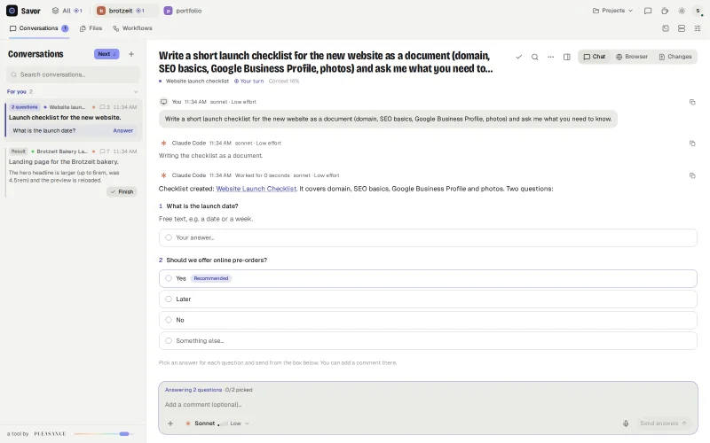
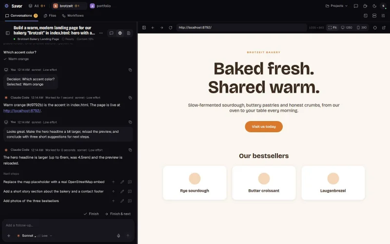
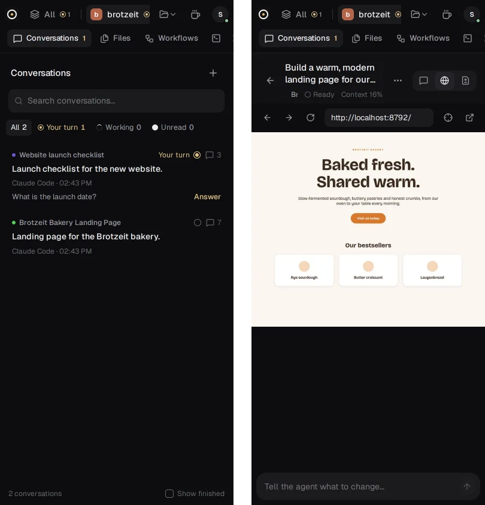

1
Reports back
Each task gets a short acknowledgement and one result. Questions arrive as decisions with options, and you answer all of them in one reply. The raw output stays one click away in the activity log.

Open source · runs on your machine
Savor is a workspace for Claude Code, Codex and OpenCode. Every task ends with one clear result, the questions that need you, and next steps. Not with a wall of terminal output.

It sits between you and your agents and turns their output into something you can act on.
Each task gets a short acknowledgement and one result. Questions arrive as decisions with options, and you answer all of them in one reply. The raw output stays one click away in the activity log.

Whatever the agent builds runs in a live preview next to the conversation. You both use the same page. Point at an element, say what should change, and its selector travels with your message.
Saved prompts run on a schedule and can be chained, from a daily digest to a release checklist. Pair your phone with a QR code and answer from anywhere, end-to-end encrypted.

Savor costs nothing. It uses the Claude Code, Codex or OpenCode subscription you already have.
.savor/ inside your project.Savor is built by coding agents working inside Savor, with one person at Pleasance setting the direction. If it ever stops, you lose nothing: your code is in git, conversations are plain files, and Claude Code and Codex sessions resume without Savor. How Savor is maintained
Savor is early software. Known gaps are listed in the README.
No account and nothing to migrate. Open a project folder, and the Claude Code and Codex sessions you already ran there show up as conversations.
The builds are not notarized yet. On first launch, open System Settings → Privacy & Security and click Open Anyway.
git clone https://github.com/robinchoice/savor.git && cd savor npm install npx playwright-core install chromium npm start
Needs Node 22.12 or newer.
You need one signed-in agent CLI: claude, codex or opencode.